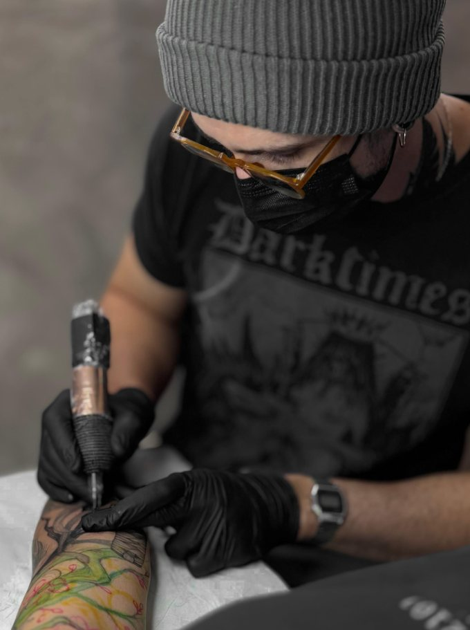
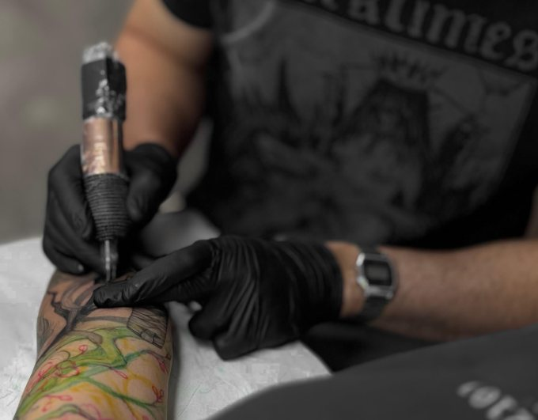
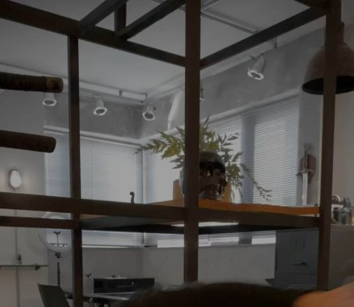

Mande sua ideia
Chame no Direct com referências, tamanho aproximado e o local do corpo. Pode ser só um rascunho ou uma frase.

R. Minas Gerais, 665 · Centro
Linhas finas e artes autorais desde 2016. Cada desenho nasce do zero, pensado pra sua história e pro seu corpo. Tatuagem em Divinópolis com hora marcada.
4,9 no Google · 40 avaliações01 O artista
Desde 2016 o Wellington transforma ideias em linhas finas. Cada arte é desenhada do zero, pensada pro encaixe no seu corpo e feita sem pressa, com atendimento atento do primeiro rascunho à cicatrização.

02 Portfólio
Arrasta pro lado. Toca na foto pra ver em tela cheia.
? Tem uma ideia
Manda que a gente desenha.
Chamar no Direct03 Vitrine
E isso não énem metade.
Tem muito mais trabalho no Instagram, com vídeos das sessões e tattoos cicatrizadas.
04 O estúdio
Sala reservada no Centro de Divinópolis, com luz boa, música baixa e tempo pra conversar. Material descartável ou esterilizado, dentro das normas de biossegurança.

05 Avaliações
“Sem dúvidas o melhor tatuador de Divinópolis!! Excelente atendimento, trabalho autoral e exclusivo, traços impecáveis e super atento aos mínimos detalhes.”
“Excelente profissional, fiquei muito feliz com o resultado da minha tatuagem, super atencioso. O estúdio é impecável em termos de limpeza e segurança, e super aconchegante.”
“Ótimo profissional, com extremo respeito ao cliente. Ambiente agradável e que respeita todas as normas de biossegurança. Traços excelentes, estilo próprio, desenhos originais e exclusivos.”
06 Como agendar
Chame no Direct com referências, tamanho aproximado e o local do corpo. Pode ser só um rascunho ou uma frase.
Wellington responde com valor, tempo de sessão e sugestões de encaixe. A arte final é desenhada exclusivamente pra você.
Escolha o melhor horário na agenda, confirme e é só chegar. O resto é com a agulha.
07 Pós-tattoo
Linha fina pede carinho na cicatrização. Na dúvida, manda mensagem: o acompanhamento é parte do trabalho.
Lave 2 a 3 vezes ao dia com água corrente e sabonete neutro, usando só a ponta dos dedos. Seque com papel toalha, dando leves batidinhas, sem esfregar.
Use a pomada indicada no dia da sessão em camada bem fina, de 2 a 3 vezes ao dia. Excesso de pomada abafa a pele e atrapalha a cicatrização.
Evite sol, piscina, mar e sauna por cerca de 30 dias. Depois de cicatrizada, use protetor solar sempre: é o que mantém o traço fino nítido por anos.
Sim, faz parte. Não coce nem arranque as casquinhas. Hidrate e deixe a pele se renovar no tempo dela, geralmente entre 15 e 30 dias.
Depois da cicatrização completa, mande uma foto pelo Direct. Wellington avalia e, se precisar, agenda o retoque com você.
08 Como chegar
| Terça | 8h30 às 19h |
|---|---|
| Quarta | 8h30 às 19h |
| Quinta | 8h30 às 19h |
| Sexta | 8h30 às 17h30 |
| Sábado | 8h às 16h |
| Domingo e segunda | Fechado |